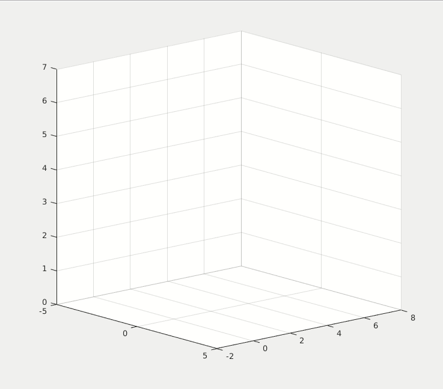
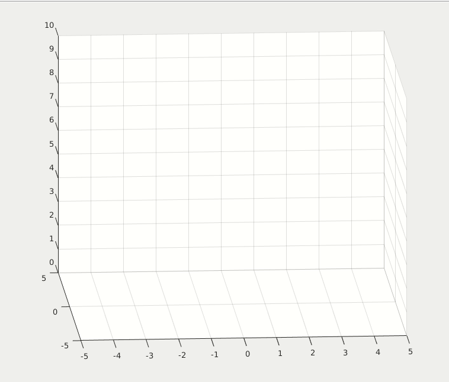
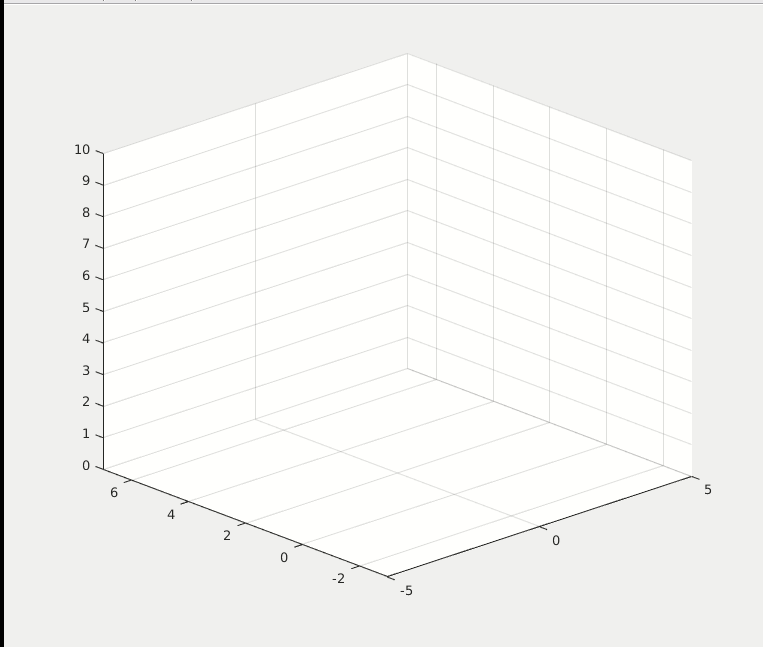
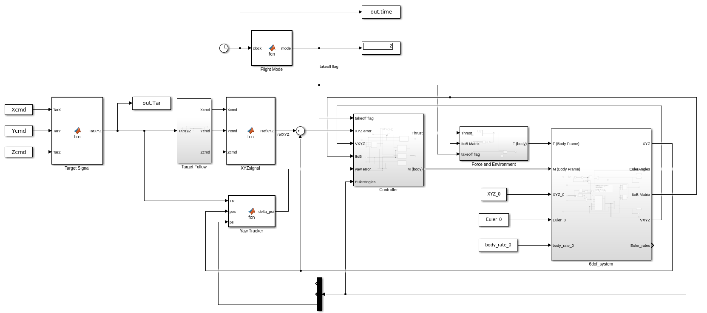
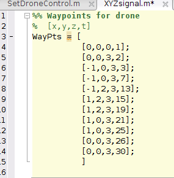
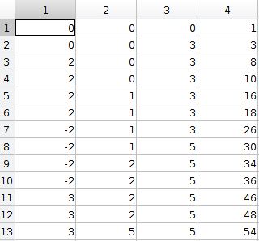
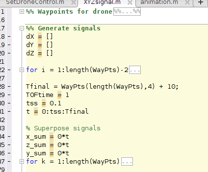
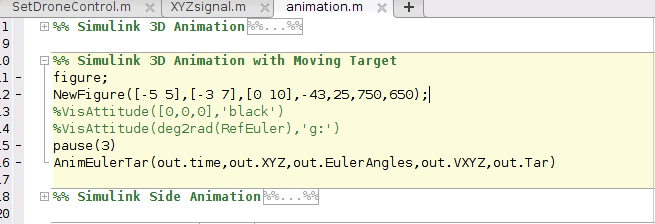

6-Dof Quadcoptor Simulation and Control
Demo
The drone flies in two primary modes: 1) follow mode 2) surrounding mode.
1) Follow mode keeps constant distance to the moving target point (black dots), in the meantime point the camera (blue axis) toward the target point.

2) Surrounding mode keeps surrounding the moving target point, in the meantime point the camera (blue axis) toward the target point


Current Model
6 degree of freedom: X, Y, Z, roll, pitch, yaw
4 control inputs: u1 for thrust, u2, u3, u4 for torque on Xb,Yb,Zb axis.
control limits: u1 smaller than 30 Newton; Torque smaller than 1.2 Nm; angles smaller than 60 degree)
Equations: Body Frame
| F = m(v_dot + wxv)
| M = I*w_dot + w x (I*w)
Current Control
Altitdue control: PD control + Mass Feedforward
Position control: cascaded PD loop, outer PD control loop generates the input refecence signal for the inner angle PD control loop .
Yaw Tracker: point the camera (blue axis) toward the target, control the yaw angle.
Target Follow: keep the distance with the target, if the surrounding angular speed is set to zero, than the drone flies in 1st mode. Otherwise, it flies in 2cd mode.
Takeoff flag: now I use clock + Takeoff time to set the takeoff flag.

- Set the initial values of the drone by running the %% Setup Drone section in SetDroneControl.m

- Use the form of [x,y,z,t] matrix to define the waypoints for the moving target, by running the %% Waypoints for drone section in XYZsignal.m. (you can obtain the WayPts by loading the pre-built waypoint from DroneSignal_movingtarget.mat file)
  - Run the %% Generate signals section in XYZsignal.m to extrapolate the signals.
 - Run the simulation of DroneControl.slx
- Run the %% Simulink 3D Animation with Moving Target section in animation.m

Access to MATLAB Project
The access fee to the project is US 5 dollars.
For the payment process, please contact me via my email: j2855001@gmail.com
Preview of the project link: Project Link